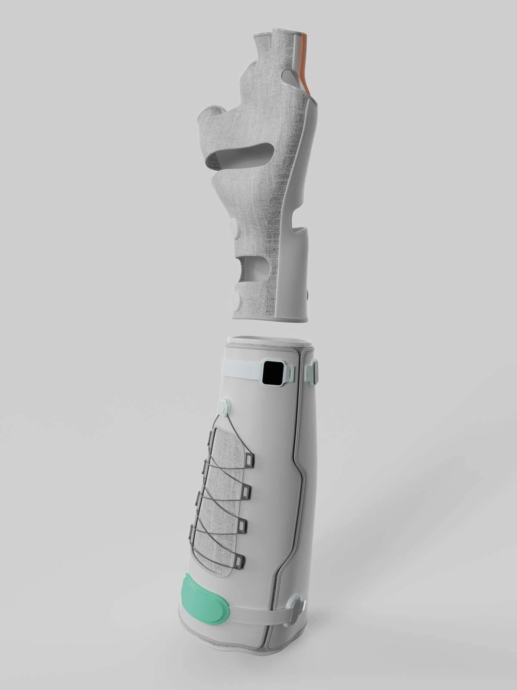
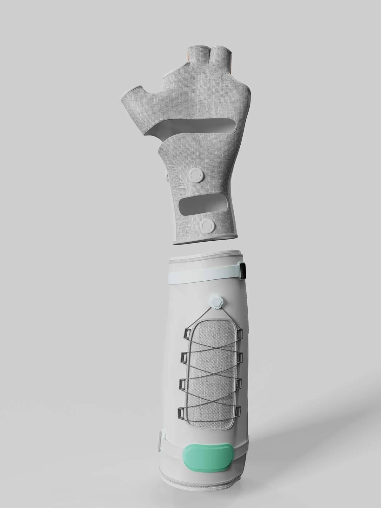
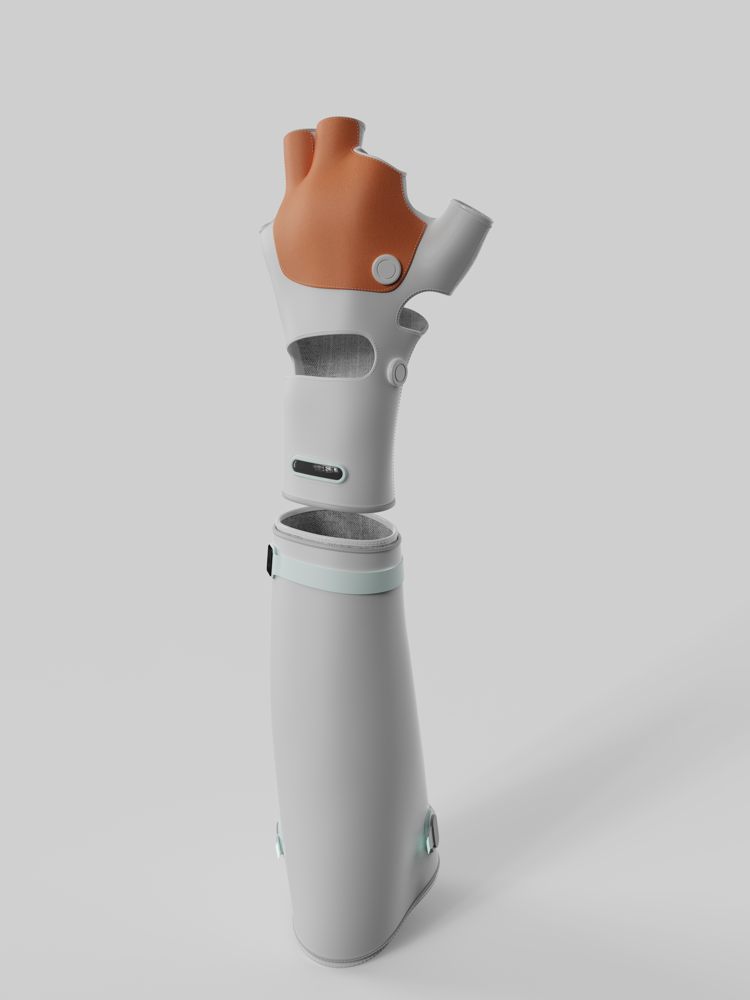
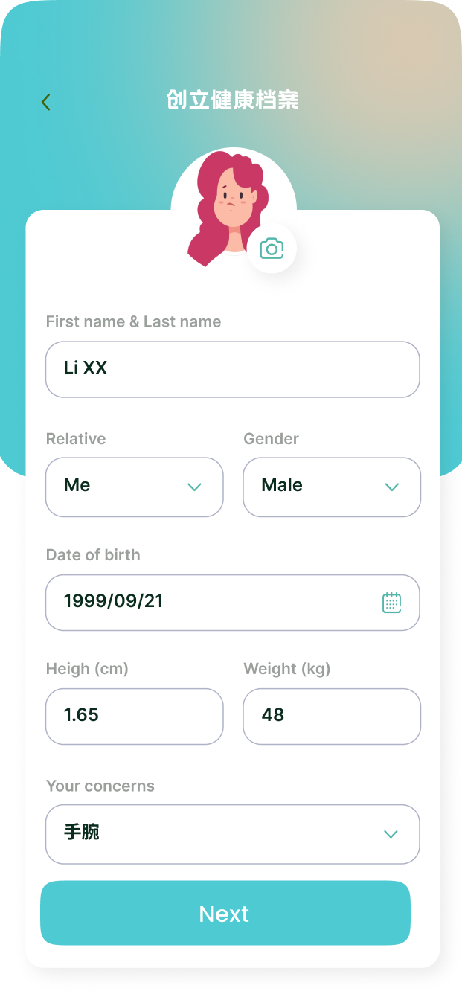
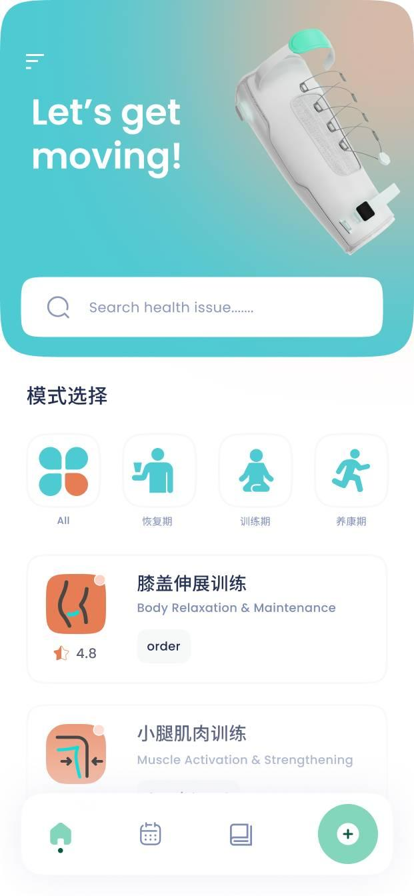
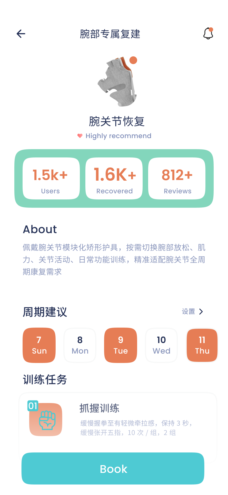
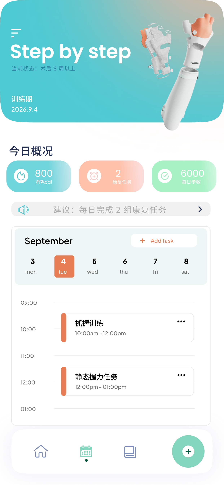
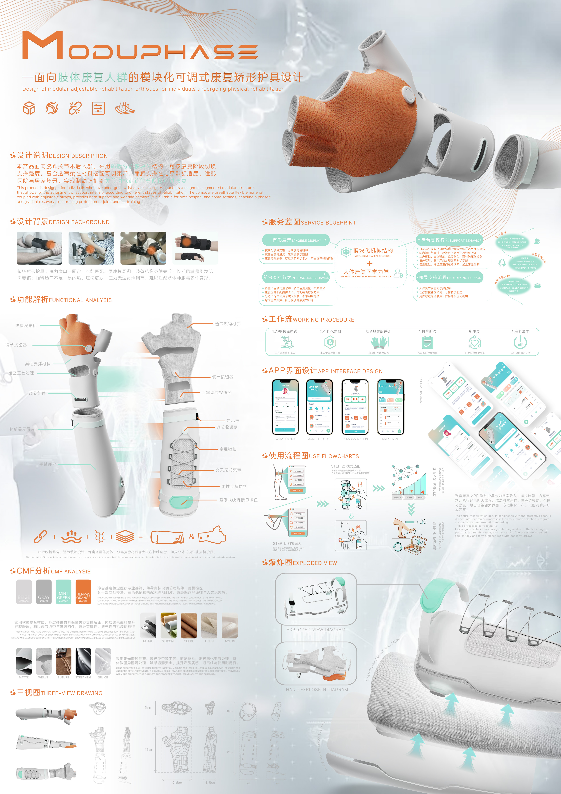

面向康复人群的模块化可调式康复矫形护具设计
ModuPhase —— 面向肢体康复人群的模块化可调式康复矫形器具设计。本产品面向膝踝关节术后人群，采用轻量化和易操作性材料，具有可调节的部件支撑底座，配合进气式材料提供舒适体验，满足足部与脚踝的支撑，实现即时防护和逐步恢复。



项目概述
ModuPhase 是一款面向肢体康复人群的模块化可调式康复矫形器具，主要针对膝踝关节术后人群设计。产品核心理念是通过模块化机械结构实现个性化适配，配合人机工程学设计，为不同康复阶段的用户提供精准的支撑与防护。
设计过程中深入开展了前期调研与服务蓝图规划，结合CMF分析确定轻量化、透气性优异的材料方案。产品采用可调节的部件支撑底座与进气式材料，兼顾即时防护与逐步恢复的双重需求，在功能性与舒适性之间取得平衡。
使用工具
设计过程
前期调研与需求分析
针对膝踝关节术后康复人群开展用户调研，分析现有矫形护具的使用痛点，梳理服务蓝图，明确产品功能需求与设计方向。
模块化机械结构设计
基于人机工程学原理，设计可调节的模块化部件支撑系统，通过三视图与爆炸图细化结构方案，确保不同体型和康复阶段的用户均可获得适配。
CMF分析与材料选型
通过CMF分析确定产品色彩、材质与表面处理方案，选用轻量化、透气性优异的进气式材料，兼顾视觉品质感与长期佩戴的舒适性。
APP界面与交互设计
配套开发康复护具移动应用，覆盖使用流程图与工作流规划，通过后期评估与改进迭代优化，实现产品与数字体验的完整闭环。
APP界面设计





项目成果
模块化结构系统
完成可调节部件支撑底座设计，通过三视图与爆炸图验证结构合理性，支持不同体型和康复阶段的个性化适配。
配套移动应用
完成康复护具APP界面设计，覆盖使用流程图与工作流规划，实现从硬件到数字体验的完整闭环。
人机工程验证
基于人机工程学原理完成设计评估，CMF方案兼顾轻量化与透气性，满足即时防护与逐步恢复的双重目标。